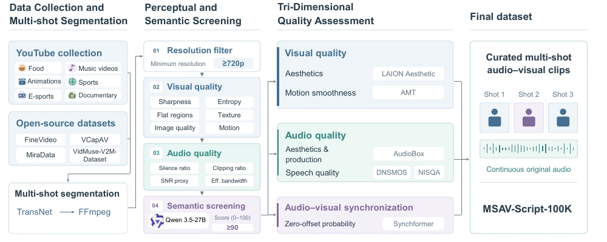

01 / Animated worlds
MULTI-SHOT AUDIO-VISUAL GENERATION
Structured Stateful
Relational Scriptswith a High-Quality Dataset for
Multi-Shot Audio-Visual Video Generation
One story. Persistent identities. Connected sounds.
Across every cut.
1 State Key Laboratory for Novel Software Technology, Nanjing University · 2 Meituan
GENERATED WITH SSRS SFTPicture meets sound. Shot meets story.
These examples have native audio. Enable sound in the players to hear cross-shot continuity.
THE IDEA
A shot boundary is not
an event boundary.
A person can leave the frame while their voice continues. An object can stay the same while its state changes. A sound can span several camera cuts.
Dense captions often leave these connections implicit. SSRS makes them explicit by separating persistent visual and voice identities from shot-specific states, binding sounds to their sources, and connecting events across the entire clip.
Read the abstract +
Coherent multi-shot audio-visual video generation requires maintaining consistent identities while depicting evolving states and coordinating sounds across shot boundaries. Although dense captions describe individual shots in detail, they rarely specify which entities persist, how their states change, or which entities and actions produce sounds. To address this limitation, we propose Structured Stateful Relational Scripts (SSRS), a textual supervision representation that separates persistent entity and voice identities from shot-specific visual and auditory states. SSRS explicitly encodes sound-source bindings and temporal relations, while a global audio-visual event sequence connects local actions and sounds, including events that continue across shot boundaries. We further introduce MSAV-Script-100K, a large-scale dataset of curated multi-shot audio-visual videos paired with detailed SSRS annotations, enabling models to learn identity persistence, state transitions, and event continuity from structured supervision. Experiments demonstrate improvements in cross-shot consistency, adherence to specified state changes, and audio-visual alignment, highlighting the effectiveness of our SSRS and MSAV-Script-100K for coherent multi-shot audio-visual generation.
SEE & HEAR THE DIFFERENCE
Multi-shot stories,
side by side.
Five selected cases. Four models.
Explore the picture—and the sound.
Loading examples…
View the shared evaluation prompt +
Selected qualitative examples from the supplied supplementary materials. These are illustrative cases, not a random sample or a substitute for the full benchmark. Model-specific generation prompts are available beneath each video.
SAME CASE · SAME SEED
Structure changes
what the model follows.
Dense SFT versus SSRS SFT.
Inspect source binding, persistence, and continuity.
Loading comparisons…
Each pair uses the same case and seed with different caption formats. Sound-related behavior should be inspected with audio enabled. These selected examples do not estimate full-set performance.
THE REPRESENTATION
What persists.
What changes. What connects.
A script with explicit identities,
local states, and global event links.
SPEAKER VIEWPerson A is visible and speaking
VISUAL STATE
A is in frame; B is off screen.
AUDIO EVENT
U1 begins · Voice vA
SOURCE BINDING
U1 → Person A
ONE CONTINUOUS UTTERANCE
Shot 1Shot 2Shot 3
Conceptual example adapted from Figure 4 of the paper. This is a representation illustration, not a generated result.
01
Global context & registries
Define the scene, recurring visual entities, reusable voice identities, and audio events once.
02
Shot-level states & relations
Describe cinematic presentation, visual and auditory evolution, and source-supported audio-visual relations.
03
Cross-shot event sequence
Connect actions and sounds across shots, preserving continuity without assuming unsupported causality.
View the complete SSRS overview from the paper ↗

THE DATASET
MSAV-Script-100K
Compact clips. Rich supervision.
Original, synchronized audio.
100Kcurated multi-shot clips
237.4hof audio-visual content
5.35shots per clip, on average
6–12sapproximate clip duration
Curated for both eyes and ears.
Consecutive shots retain their original order and continuous source audio. Multi-stage curation combines perceptual and semantic screening with assessment of visual quality, audio quality, and audio-visual synchronization.
Each clip is paired with dense audio-visual descriptions and SSRS annotations, making persistent identities, evolving states, and cross-shot events available as explicit supervision.
Six categories in the YouTube collection, complemented by existing open datasets.
AUDIO COMPOSITION
Speech54.8%
Music49.7%
Speech + music25.7%
Audio tags overlap: a clip may contain both speech and music.

THE EVIDENCE
Better adherence
to the intended story.
Matched training on LTX-2.3.
Shared clips, descriptions, and optimization settings.
11/14
MSAVBench metrics improve
over Dense SFT
+41.25pp
Overall target satisfaction
in the controlled diagnostic set
9/14
Best scores in the paper’s
reported benchmark comparison
State and relational following
40 matched prompt instances · target satisfaction (%) · higher is better
Dense SFTSSRS SFT
Overall preservation is 49.38% for Dense SFT and 52.50% for SSRS SFT. Improvements are not uniform: visual-state preservation decreases, and SSRS remains below Dense SFT on visual consistency, intra-shot layout alignment, and perceptual audio quality.
View all 14 MSAVBench metrics +
150-prompt short-video T2AV subset. All scores are normalized to [0, 1]; higher is better. Values are reproduced from Table 1.
View controlled evaluation and representation ablations +
Target satisfaction (T) and preservation (P) are percentages, reproduced from Table 2.
Ablation scores are normalized to [0, 1], reproduced from Table 3.
BUILD ON THIS WORK
Citation & resources
Read the paper, explore the dataset,
or share this project.
BIBTEX
@misc{zhao_ssrs,
title = {Structured Stateful Relational Scripts with
a High-Quality Dataset for Multi-Shot
Audio-Visual Video Generation},
author = {Zhao, Chen and Shen, Lehan and Huang, Qilong
and Li, Hongyu and Kang, Zhuoliang and Wei, Xiaoming
and Yang, Jian and Tai, Ying},
url = {https://chenzhaonju.github.io/msav-script/}
}